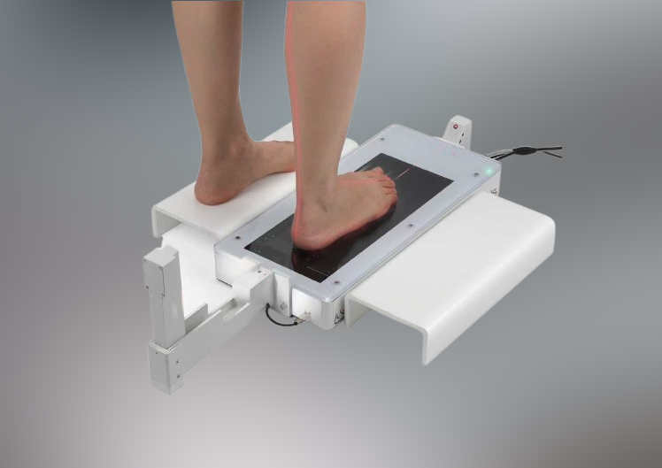
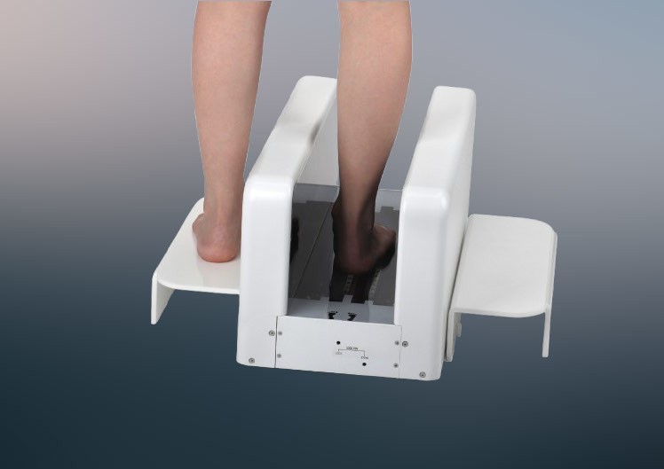
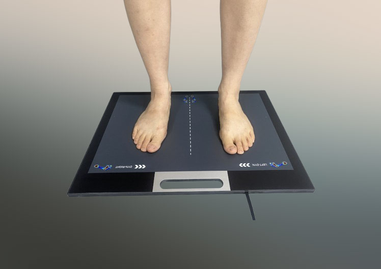

Our Devices
We offer three cutting-edge equipment series, each designed to deliver precise foot analysis and enhance user experience across diverse scenarios:
- XPOD Series - a state-of-the-art 3D full-foot scanner, providing comprehensive insights into foot structure.
- XSOL Series - a specialized plantar scanner, capturing detailed sole measurements for tailored solutions.
- Foot Pressure Mat - an intuitive diagnostic tool that accurately maps foot pressure distribution for informed assessments.

XSOL 3D Laser Foot Plantar Scanner
Portable and reliable.
Fast true 3D laser scan with color texture.
Auto landmark, arch index, measurement, and analysis report.
Custom shoes and orthotic insoles for foot clinics and retail stores.

XPOD-S 3D Laser Full-Foot Scanner
Fast true 3D laser scan with color texture.
Auto landmark, measurement, and analysis report.
Custom shoes and orthotic insoles for foot clinics and retail stores.

WatMat Series
One Platform, Complete Control
Streamline your business with tools for store, device, and customer management.
Our upcoming consumer app connects users directly with your brand.